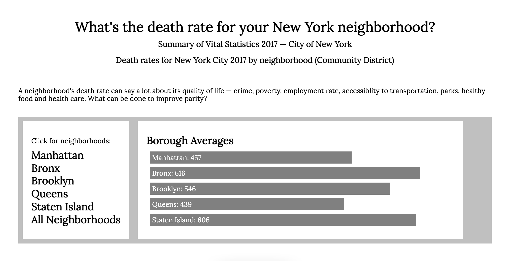

is a web developer with a mind for clean, efficient code, and an eye for ingenious UX design. Specializing in Rails and React, she works remotely from Rochester, New York, as a frontend intern for Mucktracker.

Mortality Report
New Yorkers can easily browse a 128-page city report on death rate by neighborhood. PDFs aren't formatted for data extraction, but I could via Ruby's PDF::Reader::Turtletext gem and slice function, to organize the raw data. Try it here.
New New Rom Bot
@NewNewRomBot1 is a Ruby Twitter bot that mashes up lyrics from Duran Duran, Spandau Ballet, Boy George, Flock of Seagulls and other acts from the New Romantic/New Wave early 80s. So far, it involves 100 songs. It tweets daily here!
Play with it more online, here.
Sara Harvey is a former newspaper reporter, inspired to build apps while handling digital media for SUNY Downstate in Brooklyn, New York. For fun, she draws comics and runs half-marathons through the woods.